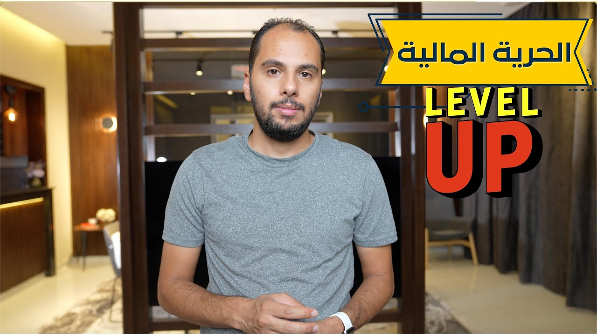

فلوس وتطوير ذات
لعبة المال - كيف تنتقل لمستوي الحرية المالية؟
ليه لعيب الكورة بياخد ملايين مع إن عامل البناء بيبذل مجهود أكتر؟ من فكرة Tony Robbins إن الفلوس لعبة، لحكاية 3 أصدقاء بيلعبوا على الـPlayStation: دخلك مرتبط بالقيمة اللي بتقدّمها، والقيمة بتكبر بالمجهود والمهارة والتأثير.

شغّل الحلقةكلنا بييجي في دماغنا السؤال الكلاسيكي: ليه لعيب الكورة بياخد ملايين، مع إنه مش بيبذل نفس المجهود اللي بيبذله عامل البناء؟ وليه الموظف بيشتغل 8 ساعات تقريبًا وياخد في الآخر مبلغ بسيط، في حين إن مدير الشركة بيشتغل نفس الوقت وبياخد مبلغ ممكن يتعدى الـ100,000 جنيه؟
فهل الدنيا ظالمة للدرجة دي؟ في الحقيقة الإجابة: لأ. الدنيا مش ظالمة ولا حاجة، إنت بس اللي مش فاهم اللعبة. وفي المقال ده هديك فكرة مهمة عن إزاي لعبة الفلوس بتتلعب، وإيه الفرق بينك وبين لعيب الكورة والفنان ومدير الشركة اللي أجورهم خرافية. ومش بس كده، في الآخر هيكون معاك خطوات تقدر بيها تدخل اللعبة، وإنت وشطارتك بقى.
ليه Tony Robbins سمّى كتابه عن الفلوس «لعبة»؟ 1:03
Tony Robbins واحد من أكبر مدربي تطوير الذات في العالم، وبحسب سيرته الرسمية، تأثيره امتد لأكتر من 50 مليون شخص، سواء اللي حضروا محاضراته أو اللي اشتروا كتبه، واللي دايمًا بتكون ضمن الكتب الأكتر مبيعًا.2 ومش بس كده، Robbins بيقول إنه ساعد رؤساء أمريكيين ورجال أعمال وفنانين من خلال تدريبهم وتطوير مهاراتهم.1
Robbins حب يعمل كتاب يساعد الناس العادية في الاستثمار والتعامل مع المال، وقرر إن الكتاب ده يضم أساليب وطرق خاصة جدًا بيستخدمها رؤساء أكبر الشركات وكبار المستثمرين في العالم، ويبسّطها هو بأسلوبه في الشرح والكتابة.
وهو بيختار اسم الكتاب، فيه ناس اعترضوا على فكرة إن المال لعبة، لأنهم شايفين إن حاجة جادة زي الاستثمار والكلام عن الفلوس مش ممكن تتسمّى باسم لعبة.1 لكن Robbins أصر على الاسم، واللي بالمناسبة هو «المال: إتقان اللعبة»، لأنه من خلال تعامله مع كبار المستثمرين وهو بيعد الكتاب، اتأكد إن واحد من أسباب نجاحهم الكبير إنهم بيتعاملوا مع المال على إنه لعبة.
إيه هي مستويات لعبة المال؟ 1:57
Tony Robbins بيقسّم لعبة المال لمستويات، وأنا هنا هبسّط الفكرة بطريقتي في 3 مستويات.3 المستوى الأول هو مستوى الأمان: هدفك فيه إنك تأمّن احتياجاتك الأساسية من أكل وشرب وغيرهم، وفيه بتعتمد اعتماد أساسي على الوظيفة، وهي اللي بتكون مصدر الدخل.
المستوى التاني هو مستوى الاستقلال، وفيه بتكون مستقل ماديًا، بمعنى إنه يكون عندك مصدر دخل تاني غير الوظيفة، فسواء اشتغلت أو ما اشتغلتش، بيكون عندك دخل بيأمّن احتياجاتك الأساسية وبعض من الرفاهية.
أما المستوى التالت والأخير فهو مستوى الحرية المالية، الـlevel الوحش، اللي فيه استثماراتك بتدخّل لك دخل كبير جدًا، يغطي متطلباتك في كل مستوياتها، سواء احتياجات أساسية أو رفاهية.
وما بين التلات مستويات، الناس بتسعى بدرجات متفاوتة: فيه اللي بيقدر يوصل للمستوى التاني، وفيه اللي بيعيش طول حياته في المستوى الأول، أما المستوى التالت فعدد قليل جدًا من الناس اللي بيوصل له. طب إزاي أقدر أتنقل من مستوى لمستوى في لعبة المال؟
حكاية رضا وماهر وعلي: إزاي تنتقل من مستوى للتاني؟ 2:56
تعالى أحكي لك حكاية: 3 أصدقاء كانوا بيلعبوا لعبة على الـPlayStation، الأولاني رضا، والتاني ماهر، والتالت علي. اللعبة مكونة من 3 مستويات، ومدتها شهر، ومسموح لأي لاعب يلعبها الوقت اللي يحب، بس بشرط مهم جدًا: إنها لازم تتلعب في وقت فراغهم، وما يكونش عندهم أي التزامات في الوقت ده.
في المستوى الأول كان مطلوب إنهم ينقلوا مجموعة من الحجارة من مكان لمكان، واللعبة بتكافئهم بقطع دهب افتراضية، وعشان يروحوا للمستوى التاني لازم يجمعوا 100 قطعة. وكمان المجهود اللي بيبذله اللاعب بيخليه يشتري أكل افتراضي عشان يزوّد من طاقته. فكان رضا جوه دوامة: كل يوم يجيب قطعة دهب واحدة ويصرفها على الأكل عشان الـrecovery. أما ماهر وعلي فقعدوا يشوفوا فيديوهات بتشرح طريقة التعامل مع اللعبة، واتعلموا مهارة جديدة قدروا بيها يجمعوا 100 قطعة دهب وينتقلوا للمستوى التاني.
في المستوى التاني كان مطلوب منهم يجمعوا حوالي 10,000 قطعة دهب عشان يروحوا للمستوى التالت، والأصعب إنهم لازم يخلّوا في رصيدهم 100 قطعة على الأقل عشان ما ينزلوش للمستوى الأولاني. ماهر فضل يلعب بنفس الطريقة اللي استخدمها في المستوى الأولاني، والطريقة دي خلّته يحافظ على رصيد حوالي 1,000 قطعة دهب لنهاية الشهر. ده أمّن بقاءه في المستوى التاني، لكنه ما كانش كافي أبدًا إنه ينقله للتالت.
أما علي ففكّر بطريقة مختلفة. كان عارف إن الطريقة القديمة اللي اتنقل بيها من المستوى الأول للتاني مستحيل تكون كافية، فقعد يجرّب ويزوّد من مهاراته لغاية ما وصل لمعادلة تخليه يحقق حوالي 2,000 قطعة دهب على نهاية الشهر. يعني لو عاوز يوصل للمستوى التالت لوحده، محتاج 5 أضعاف وقته.
فعلي كتب الطريقة بكل تفاصيلها، وجمع 5 من أصدقائه، وبدأ يشرح لهم خطته ومعادلته، وعمل لهم جدول يناسب أوقات فراغهم، وفضل يتابعهم في أوقات فراغه، لغاية ما وصل في نهاية الشهر للمستوى التالت. والأكتر من كده إنه بقى عنده خطة يقدر يجمع بيها أكتر من مليون قطعة دهب.
ليه مدير الشركة بيقبض أكتر منك؟ 4:40
الحكاية دي بتلخّص طرق البشر في لعب لعبة الفلوس. رضا بيمثل الإنسان اللي بيعتمد في دخله على المجهود، ولأن المجهود هو الحاجة اللي كل البشر يقدروا يعملوها تقريبًا، فسعره بيبقى رخيص، والمردود اللي بييجي منه قليل. والناس دي بتعافر طول عمرها عشان يا دوب تفضل في المستوى الأول، مستوى الأمان المالي.
ماهر بيمثل الإنسان اللي بيشتغل بمجهود زائد مهارة، ودول دخلهم أعلى، وبيزيد كل ما تزيد مهاراتهم، وبيها بيقدروا يأمّنوا لنفسهم مصدر دخل ما يعتمدش على الوظيفة، فبيوصلوا للمستوى التاني، مستوى الاستقلال المالي.
أما علي فبيمثل القليلين مننا، اللي بيبقى ليهم تأثير كبير نتيجة للقيمة اللي بيقدموها. علي جمع ما بين المجهود والمهارة والتأثير: جرّب بنفسه طرق اللعب، وطوّر مهارته فيها، ولما بقى متقنها كويس جدًا عرف إن وقته مش كافي يوصّله للمستوى التالت، فقرر يشارك ناس تانية ويدربهم، فهو يوصل لهدفه وهم يستفادوا. ودي تحديدًا القيمة والتأثير اللي قدّمه.
عشان كده، وإنت بتلعب لعبة المال، محتاج تقدّم قيمة كبيرة، وكل ما زادت القيمة اللي بتقدّمها زاد دخلك. وعشان تقدّم قيمة، محتاج تبذل مجهود وتزوّد مهاراتك. فلو رجعنا للسؤال اللي في الأول: ليه إنت بتقبض مبلغ قليل ومدير الشركة بيقبض مبلغ ضخم؟ لأن القيمة اللي إنت بتقدّمها مش زي القيمة اللي هو بيقدّمها. إنت في الـ8 ساعات ممكن تشغّل مكنة في المصنع، لكن هو بيعمل الخطط، وبيدرس السوق، وبيتابع كل قسم، يعني بيشغّل مصنع كامل.
القيمة والتأثير هنا مختلفين: فيه كتير ممكن ييجي يعمل وظيفتك ويقدّم نفس القيمة، أما هو فما فيش كتير بينافسوه على وظيفته ولا على القيمة اللي بيقدّمها. ونفس الكلام على لعيب الكورة أو الفنان: عندهم مهارات زائد تأثير، وتأثيرهم بيكبر بحجم الناس اللي بيتابعوهم ومهتمين بيهم وبمهاراتهم، ودي حاجة بتساوي قيمة كبيرة بالنسبة لجمهورهم. والقيمة اللي بتقدّمها بتساوي فلوس.
إزاي تطبّق الفكرة لو إنت محاسب؟ 6:30
خلينا ناخد الفكرة بمثال أقرب لمعظمنا: نفترض إنك متخرج من كلية التجارة وبتشتغل محاسب في شركة. إنت كده عندك المجهود زائد المهارة، بس للأسف المهارة هنا مش كافية، لأنك مش بتقدّم قيمة أكبر من باقي الشباب اللي بيشتغلوا محاسبين.
لكن لو زوّدت مهارتك في الحسابات، وبدأت تضيف مهارات تانية زي التواصل والتسويق، كده إنت بقيت مختلف. ممكن تبدأ تدي استشارات في المحاسبة من خلال الإنترنت، وتستفيد بمهارات التسويق اللي اتعلمتها، ومهارة التواصل تساعدك تخدم عملاءك صح. ومع الوقت ممكن تجمع كل الأخطاء اللي بيقع فيها عملاءك وتعمل Online course تبيعه لشريحة أكبر من الجمهور، وممكن كمان تعمل كورسات لطلبة التجارة تساعدهم يفهموا المنهج صح.
وهكذا، كل ما تزوّد مهاراتك، كل ما تزيد القيمة اللي بتقدّمها، وبالتالي يزيد دخلك. خد المثال ده على أي مهارة أو أي حاجة اتعلمتها، وهتلاقيه فعّال جدًا معاك.
إزاي تلعب لعبة الفلوس صح؟ 7:25
التعامل مع الفلوس عامل زي اللعبة: مطلوب منك تستخدم الأدوات المتاحة لك عشان تتنقل من مستوى للتاني. ولأنها لعبة، فهي مش بتعتمد على المجهود بس، لكنها بتحتاج مهارات كمان. فزوّد مهاراتك على قد ما تقدر، وما تنساش إن دخلك دايمًا هيكون مرتبط بالتأثير والقيمة اللي بتقدّمها، فحاول دايمًا تقدّم قيمة كبيرة في شغلك.
فصول الحلقة
أسئلة شائعة
إيه هي مستويات لعبة المال؟
في التبسيط اللي في الحلقة، المستوى الأول هو الأمان، وفيه بتأمّن احتياجاتك الأساسية من الوظيفة. التاني هو الاستقلال، وفيه عندك مصدر دخل تاني غير الوظيفة يغطي الأساسيات وبعض الرفاهية. والتالت هو الحرية المالية، وفيه استثماراتك بتدخّل لك دخل يغطي كل متطلباتك.
ليه لعيب الكورة بياخد أكتر من عامل البناء؟
لأن المجهود لوحده حاجة كل الناس تقريبًا تقدر تعملها، فسعره رخيص. لعيب الكورة عنده مهارات زائد تأثير بيكبر بحجم الناس اللي بيتابعوه، ودي قيمة كبيرة لجمهوره، والقيمة اللي بتقدّمها بتساوي فلوس.
إزاي أزوّد دخلي وأنا موظف؟
زوّد مهارتك الأساسية وضيف عليها مهارات تانية زي التواصل والتسويق. المحاسب مثلًا ممكن يدي استشارات من خلال الإنترنت أو يعمل كورس يبيعه لشريحة أكبر، وكل ما تزيد القيمة اللي بتقدّمها يزيد دخلك.
ليه Tony Robbins بيعتبر الفلوس لعبة؟
لأنه من خلال تعامله مع كبار المستثمرين وهو بيعد كتابه «المال: إتقان اللعبة»، اتأكد إن واحد من أسباب نجاحهم إنهم بيتعاملوا مع المال على إنه لعبة.
تصحيحات
- قلت إن المتخصصين اللي دار النشر عيّنتهم لمراجعة الكتاب هما اللي اعترضوا على كلمة «لعبة» في العنوان؛ Robbins نفسه بيحكي في أول الكتاب إن وهو بيختار العنوان، شوية ناس اعترضوا على فكرة إن الفلوس ممكن تبقى لعبة، ومش بيقول إنهم مراجعين دار النشر.1
- قلت إن Tony Robbins بيقول إن لعبة المال 3 مستويات، وإن أول مستوى بيعتمد على الوظيفة؛ في كتاب «المال: إتقان اللعبة» هو بيقسّم الأحلام المالية لـ5 مستويات: الأمان المالي، والحيوية المالية، والاستقلال المالي، والحرية المالية، والحرية المالية المطلقة، وحتى أول مستوى عنده معناه إنك ما تحتاجش تشتغل عشان تدفع تمن الأساسيات. الـ3 مستويات اللي حكيتها تبسيط مني للفكرة.3
- قلت إن Robbins ساعد رؤساء دول كبيرة؛ سيرته اللي بينشرها الناشر بتقول إنه درّب 4 رؤساء أمريكيين، ومش بتذكر رؤساء دول تانية.1